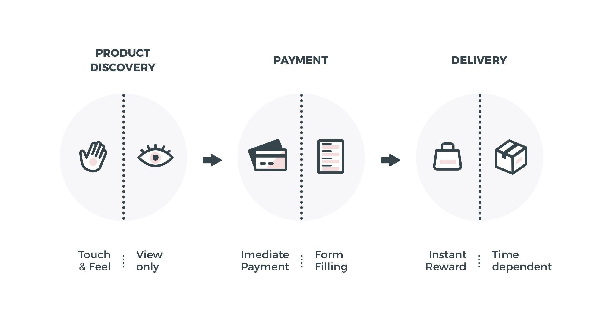
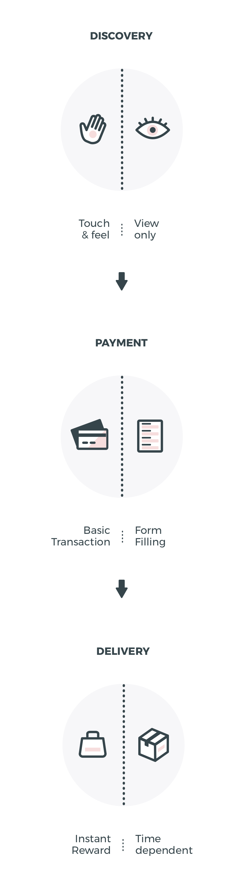
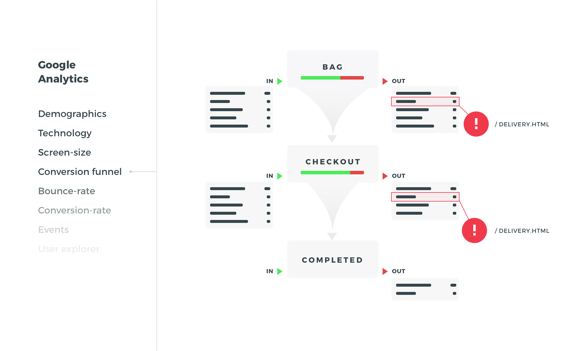
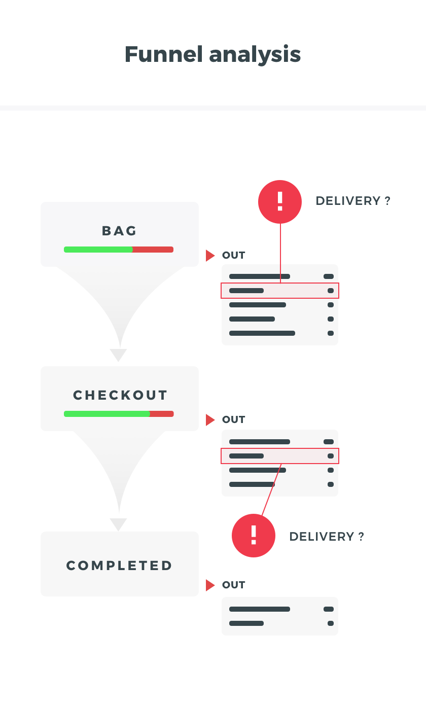

Nobody's Child.
Nobody's Child
Boosting conversions and enhancing the shopping experience.
- UX
- UI
- E-Commerce
Scope of the project
- Find & repair usability issues
- Quantitative & Qualitative analysis
- Conversion Rate Optimization
- UI and Visual Design
The shopping experience
Its well known that technology has been exponentially shapping the commercial industry in the last decades. It has unlocked new exploration methods, brought a new way to consume goods and detached the customer physical presence from the shopping activity. But other issues have surfaced, such as the ability to touch, feel, and try the products before buying them, or even the feeling of instant reward the user experiences after completing a purchase. This is where the user experience design comes in, as a methodology that takes the user/customer to the center of the equation.
It’s also relevant to mention the value of the marketing intel associated with the development of this kind of e-commerce interfaces. One of the most proiminent goals is to convert leads into customers and, possibly, returning visitors. This objectives are achievable through a startegic implementation of CTA’s, up sales, cross sales, anchoring opportunities, and others within the interface.
 The shopping experience
This project started with an heuristic evaluation to the platform to find usability issues and determine the areas where it was crucial to take action. By doing this, along with internal testing, it was found that the customer service and checkout journeys had most critical usability issues, due the fact of some of its functionalities being unecessarly complex or even impossible to be completed.
I also recurred to Google Analytics to perform a quantitative analysis in order to evaluate demographics, understand the user behaviour, measure page speed and browser sizes, and other general information. For instance, by setting up a conversion funnel in the checkout, i’ve found that more than 15% of the users were leaving the checkout pages looking for delivery information.
 This is where the user experience design comes in, as a design methodology that has the user shopping experience in the center of the equation. It’s also relevant to mention the value of the marketing intel associated with the development of e-commerce interfaces. One of the most proiminent goal is to convert leads into customers and, possibly, returning visitors. This goals are achievable through a startegic implementation of CTA’s, up sales, cross sales, anchoring opportunities, and others within the interface.